专题4.2 比较线段的长短
专题4.2 比较线段的长短


教学目标 | 1. 了解“两点之间线段最短”的性质及两点间距离的定义，能结合实例解释应用。 2. 掌握比较线段长短的度量法与叠合法，能用尺规作一条线段等于已知线段。 3. 理解线段中点概念及几何意义，能运用线段和差、中点性质解决简单计算问题。 |
教学重难点 | 1.重点 （1）心是掌握线段长短的比较方法（度量法、叠合法），能规范使用直尺、圆规进行操作。 （2）关键是理解“两点之间线段最短”的性质和线段中点的概念，并能用于解决简单问题。 2.难点 （1）难点在于叠合法的规范操作，尤其是通过图形语言理解“端点重合、同侧放置”的比较逻辑。 （2）难点在于运用线段中点性质及和差关系，进行多步骤的线段长度推理与计算。 |

知识点01 线段的性质
两点之间的所有连线中，线段最短.简单地：两点之间线段最短.我们把两点之间线段的长度，叫做这两点之间的距离.
【即学即练1】
1．高速公路是指专供汽车高速行驶的公路．高速公路在建设过程中，通常要从大山中开挖隧道穿过，把道路取直以缩短路程．其中的数学原理是（ ）
A．两点之间，线段最短 B．两点确定一条直线
C．平行线之间的距离最短 D．垂线段最短
知识点02 线段大小比较
1.比较线段大小的方法：（1）目测法；（2）度量法；（3）叠合法
2.叠合比较法：利用直尺和圆规把线段放在同一条直线上，使其中一个端点重合，另一个端点位于重合端点同侧，根据另一端点与重合端点的远近来比较长短．如下图：

【说明】线段的比较方法除了叠合比较法外，度量比较法也是常用的方法．
【即学即练2】
1．如图，点 、
、 在线段
在线段 上，点
上，点 、
、 分别是
分别是 、
、 的中点，
的中点， ，且
，且 ，那么线段
，那么线段 的长是 ．
的长是 ．
知识点03 尺规作图
仅用圆规和没有刻度的直尺作图的方法叫做尺规作图.
【说明】（1）只使用圆规和直尺，并且只准许使用有限次，来解决不同的平面几何作图题．
（2）直尺必须没有刻度，无限长，且只能使用直尺的固定一侧.只可以用它来将两个点连在一起，不可以在上面画刻度．
（3）圆规可以开至无限宽，但上面也不能有刻度.它只可以拉开成之前构造过的长度．
【即学即练3】
1．作图题：如图，平面上有四个点A，B，C，D，根据下列语句画图：

(1)做射线 ；
；
(2)取一点P，使点P既在直线上又在直线 上；
上；
(3)若A、C两点之间的距离为4，B、D两点之间的距离为3，点M到A，B，C，D四点距离之和最短．画出点M的位置，并写出该最短距离和是___________．
知识点04 线段的和与差
如下图：线段AB上有一点C，则AC+BC=AB；AC=AB - BC； BC=AB - AC，
在这里线段AC、BC、AB表示线段的长度，如AC+BC=AB表示AC长度与BC长度之和等于AB长度.

【即学即练4】
1．如图，点 是线段上两点，点
是线段上两点，点 为线段的中点，
为线段的中点， ，
，
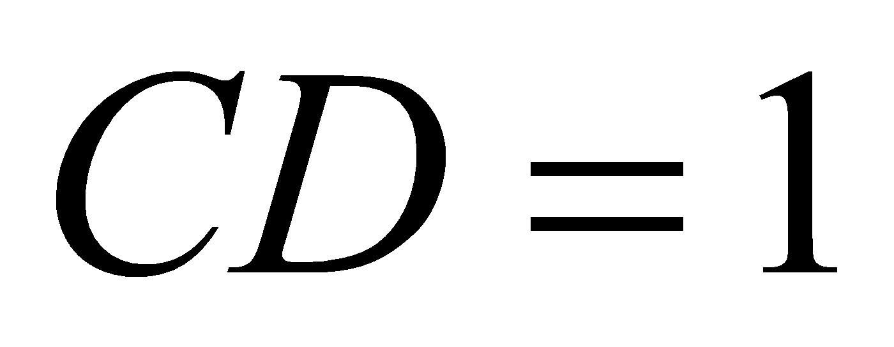
．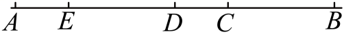
(1)图中共有_______条线段；
(2)求的长；
(3)若 ，求
，求 的长．
的长．
知识点05 线段的中点
线段的中点：把一条线段分成两条相等线段的点，叫做线段的中点．如下图所示，点C是线段AB的中点，则AC=CB= AB，或AB=2AC=2BC．
AB，或AB=2AC=2BC．
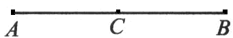
【说明】若点C是线段AB的中点，则点C一定在线段AB上．
【即学即练5】
1．线段上，M为 的中点，N为
的中点，N为 的中点，
的中点， ，
， ，
， （ ）．
（ ）．
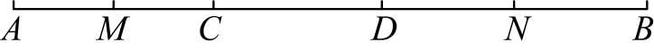
A． B．
B． C．
C． D．
D．
2．如图， ，
， ，
， ，是直线
，是直线 上的四个点，，分别是，的中点．
上的四个点，，分别是，的中点．

(1)如果 ，
， ，
， ，则
，则 的长为________cm；
的长为________cm；
(2)如果 ，
， ，则的长为_________cm；
，则的长为_________cm；
(3)如果
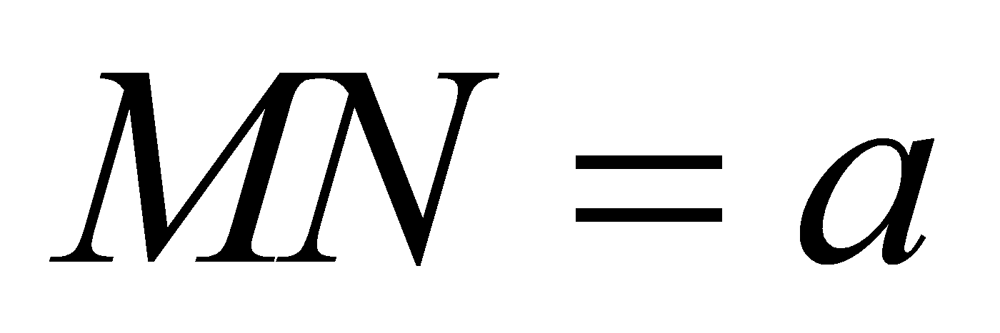
， ，求的长，并说明理由．
，求的长，并说明理由．
题型01 两点之间线段最短
【典例1】（25-26八年级上·全国·课后作业）如图，田亮同学用剪刀沿直线将一片平整的树叶剪掉一部分，发现剩下树叶的周长比原树叶的周长要小，能正确解释这一现象的数学知识是 ．

【变式1】（24-25七年级上·全国·阶段练习）小海同学计划到距家直线距离为12.9公里的天竺山森林公园游玩．他通过导航软件发现有三条可选路线，如图所示，长度分别为15.8公里，15.4公里，18.4公里．能解释这一现象的数学知识是 ．

【变式2】（24-25七年级上·吉林长春·期末）安溪地处戴云山脉东南坡，山峦起伏，地形较为复杂．如图，在 村与
村与 村之间有一座大山，原来从村到村，需沿道路
村之间有一座大山，原来从村到村，需沿道路
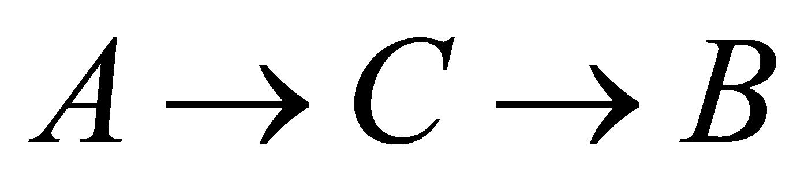
绕过村庄间的大山，打通，间的隧道后，就可直接从村到村，缩短村到村的路程.其中蕴含的数学道理是 ．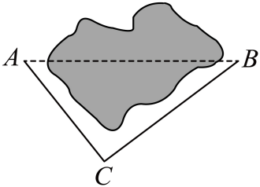
【变式3】（24-25七年级上·辽宁锦州·阶段练习）锦州市开展冬季研学活动，从市府广场出发，开车去东方华地城，打开导航，显示两地直线距离为
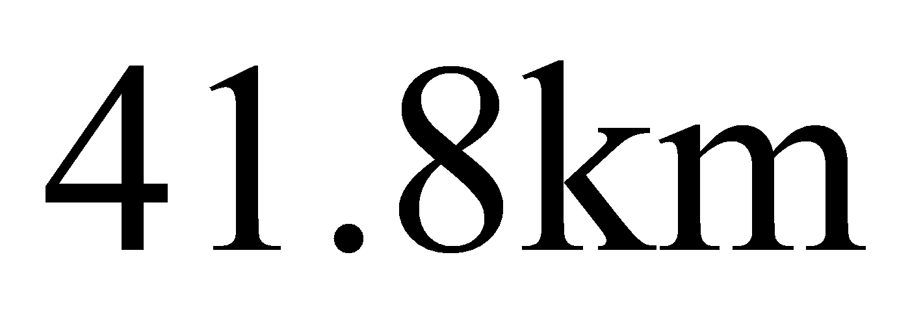
，但导航提供的三条可选路线长却分别为 ．能解释这一现象的数学知识是 ．
．能解释这一现象的数学知识是 ．
题型02 线段的数量问题的应用
【典例2】（24-25七年级上·全国·课后作业）如图是广深港高铁线路图，往返于广州南站和深圳北站的高铁列车中途停靠庆盛站、虎门站和光明城站，则有 种不同的票价，要准备 种车票．
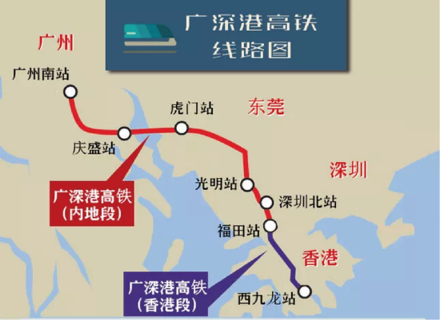
【变式1】（24-25七年级上·全国·课后作业）如图，点，， 在直线
在直线 上，则图中有 条线段， 条射线，有 条直线．
上，则图中有 条线段， 条射线，有 条直线．

【变式2】（24-25七年级上·全国·课后作业）如图，图中有线段 条，分别是线段 ；图中有射线 条，分别是射线 、 、 、 、 ．
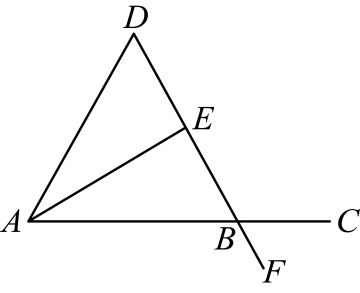
【变式3】（24-25七年级上·湖南长沙·期末）湖南湘江新区大王山欢乐云巴对外运营．一张云巴票就能领略沿途 余个景点，感受大王山人文风情，如图，乘云巴从山塘站出发，沿途经过
余个景点，感受大王山人文风情，如图，乘云巴从山塘站出发，沿途经过 个车站方可到达观音港站，那么运营公司在山塘站，观音港站两站之间往返需要安排不同的车票 种．
个车站方可到达观音港站，那么运营公司在山塘站，观音港站两站之间往返需要安排不同的车票 种．
| 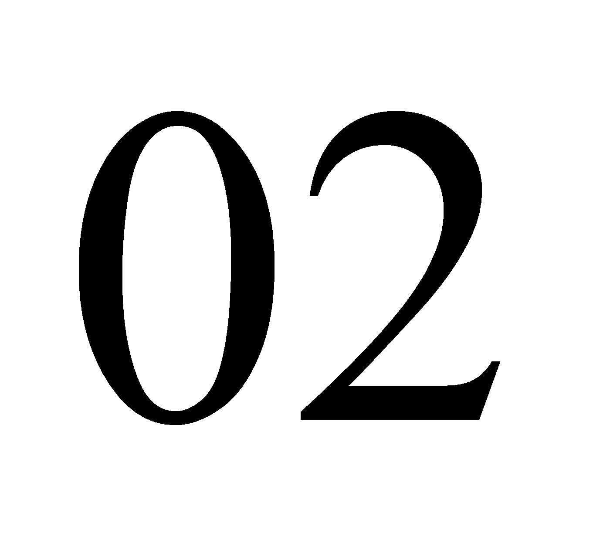 欢乐雪域站 | 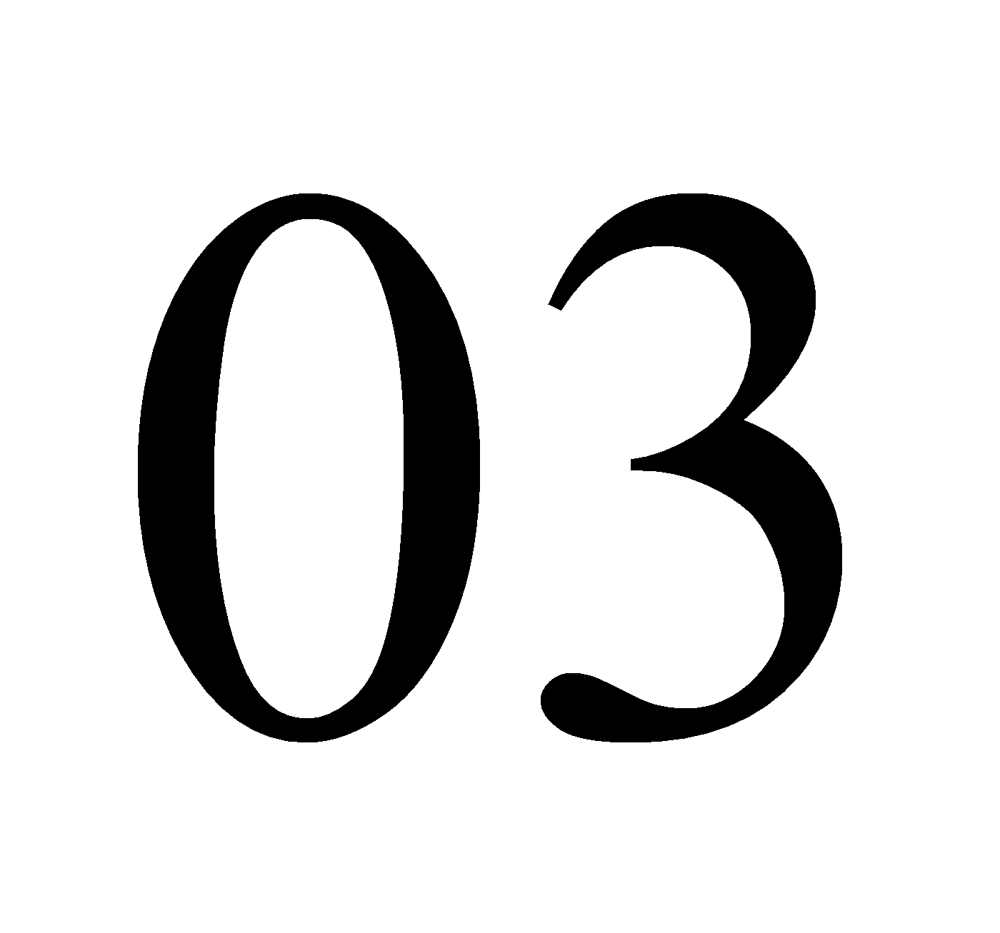 欢乐城站 | 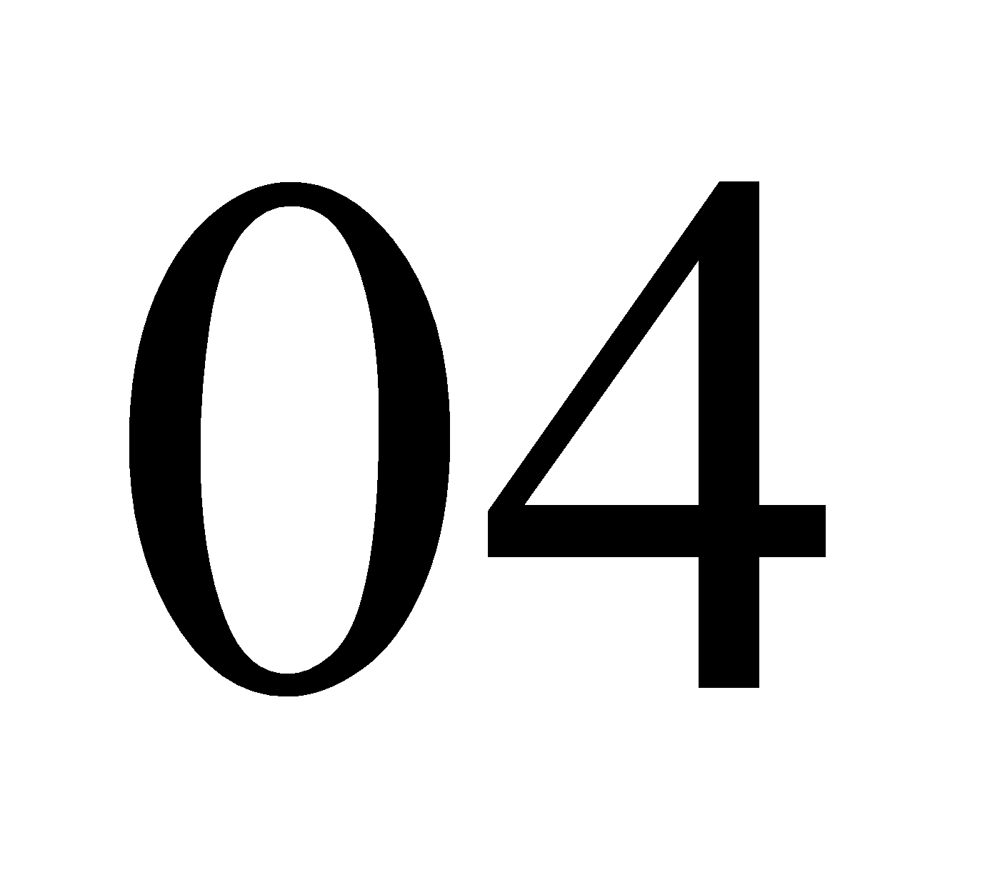 华谊电影小镇站 |
| 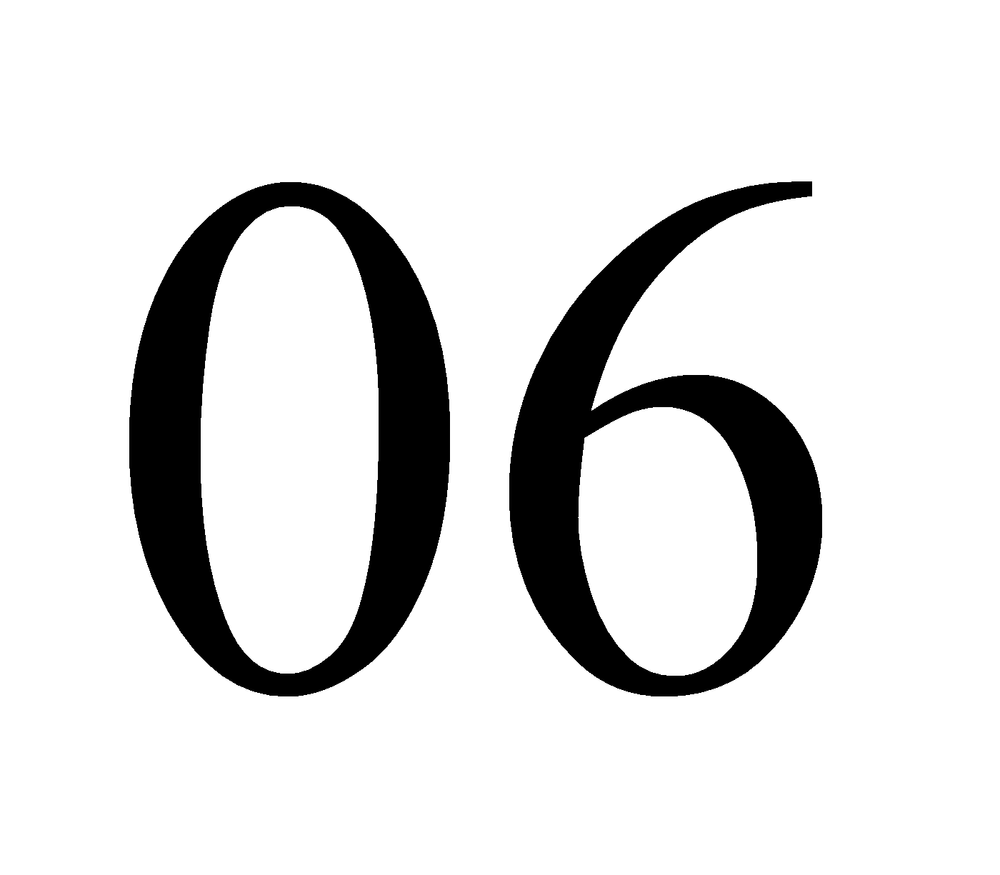 桐溪公园站 |
| 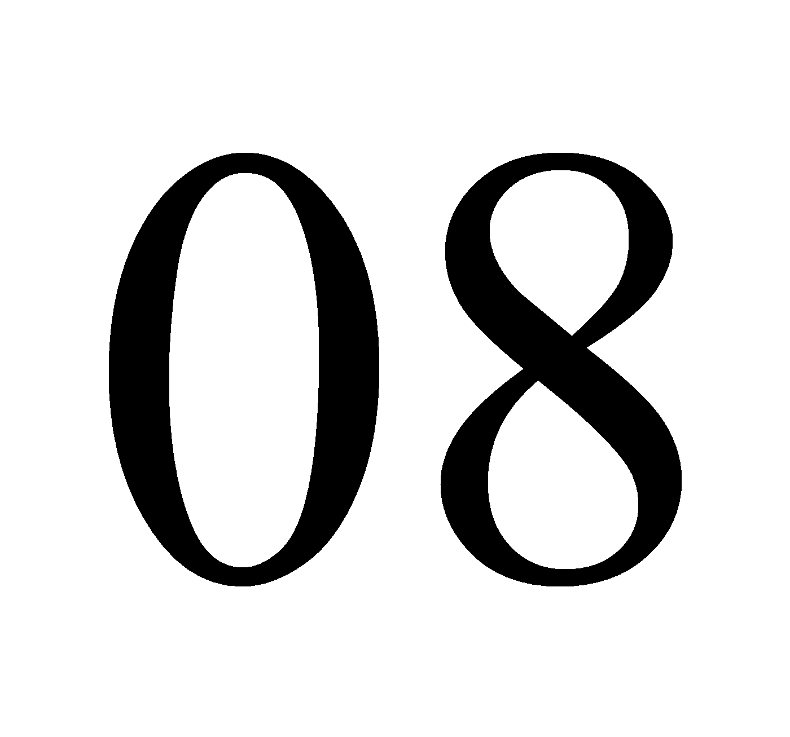 学士站 | 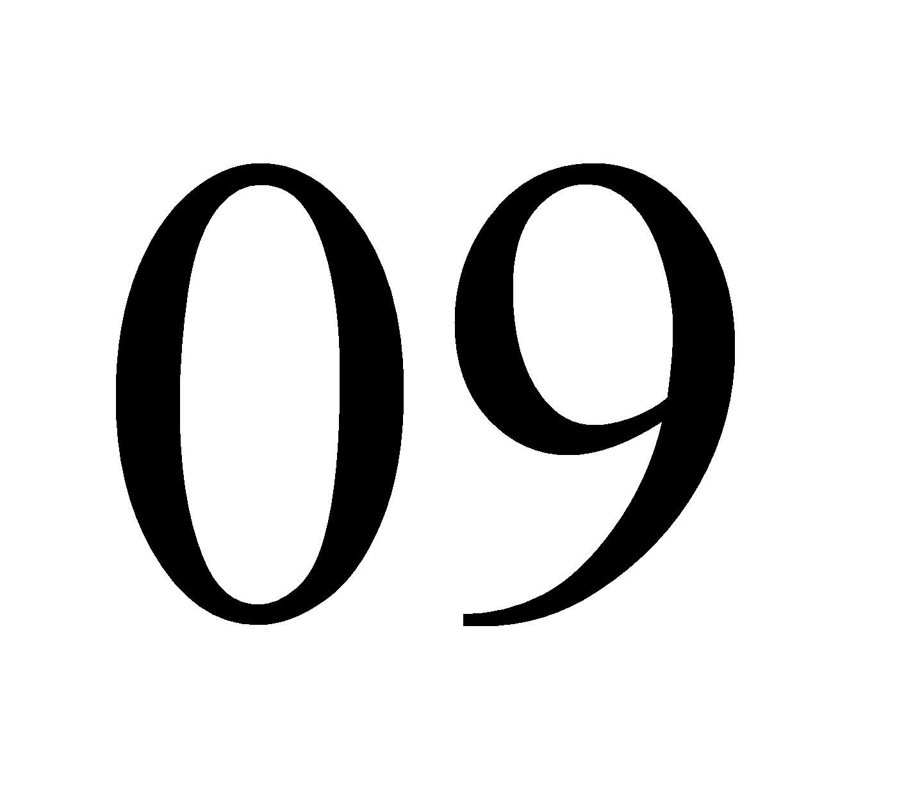 观音港站 |
 山塘站
山塘站 大王山站
大王山站 植物公园站
植物公园站题型03 线段的和与差
【典例3】（24-25七年级上·四川成都·阶段练习）如图，线段 ，点是线段
，点是线段 上一点，且
上一点，且 ，点
，点 为线段
为线段 的中点，则线段
的中点，则线段 ．
．

【变式1】（24-25七年级上·山东聊城·期末）已知线段，在的延长线上取一点C，使 ，在的反向延长线上取一点D，使，则线段的长度是线段
，在的反向延长线上取一点D，使，则线段的长度是线段 的长度的 倍．
的长度的 倍．
【变式2】（24-25七年级上·河北衡水·阶段练习）如图，、、 为线段
为线段 上的三个点，
上的三个点，
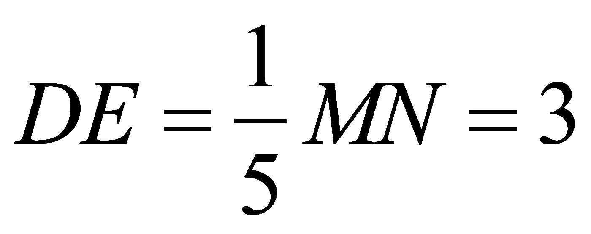
，线段的长为 ．
【变式3】（24-25七年级下·内蒙古乌海·期末）若点，，在同一条直线上，如果线段 ，线段
，线段 ，那么，两点之间距离是 ．
，那么，两点之间距离是 ．
题型04 作线段（尺规作图）
【典例4】（24-25七年级上·全国·课后作业）如图，已知线段
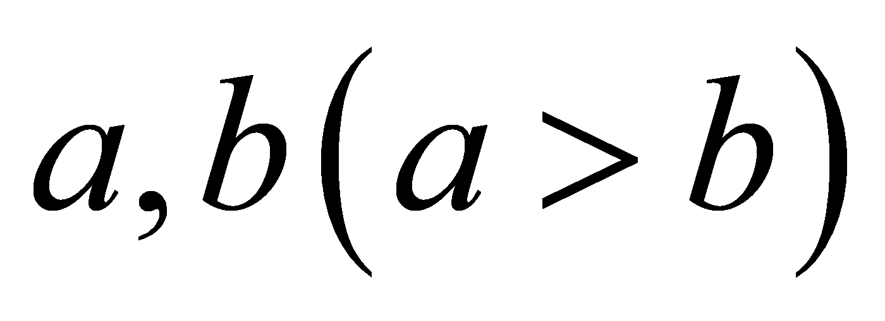
，用直尺和圆规画出线段c，使它等于 ．（只写出作法）
．（只写出作法）解：（1）画射线 ；
；
（2）在射线上顺次截取
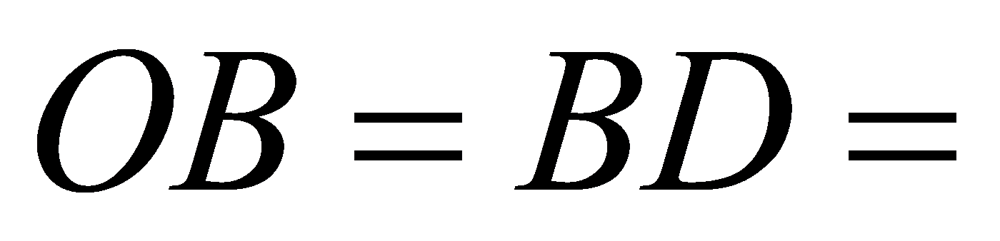
______；（3）在线段 上截取
上截取
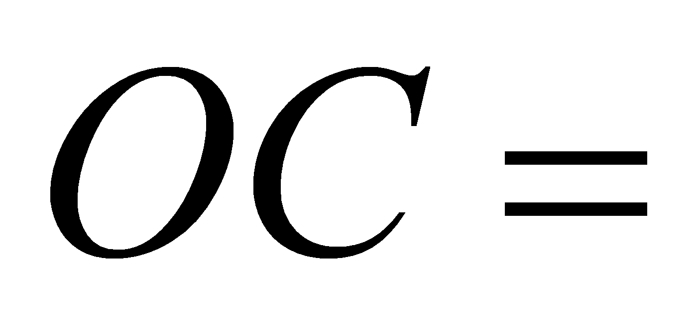
______，线段______即为所求．【变式1】（24-25七年级上·福建厦门·期末）如图，平面上有四个点A，B，C，D，根据下列语句画图：
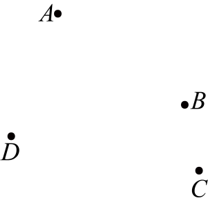
(1)画线段， 交于E点；
交于E点；
(2)作射线 ；
；
(3)反向延长至F，使得．（不写作法，保留作图痕迹）
【变式2】（24-25六年级下·山东东营·阶段练习）如图，已知线段，请用尺规按下列要求作图：

(1)延长线段到C，使 ；
；
(2)延长线段 到D，使
到D，使
(3)如果 ，那么
，那么 ______
______ ，
，  ______， ______
______， ______
【变式3】（24-25七年级下·河南周口·阶段练习）（1）如图，已知线段 、
、 ．请用尺规按要求作图：
．请用尺规按要求作图：

①作线段；
②在线段的延长线上截取 ；(不要求写画法，保留作图痕迹)
；(不要求写画法，保留作图痕迹)
（2）若点是线段的中点，用含、的式子表示线段的长．
题型05 线段中点的有关计算
【典例5】（24-25七年级上·山东临沂·阶段练习）如图，已知点为线段上一点， ，，
，，
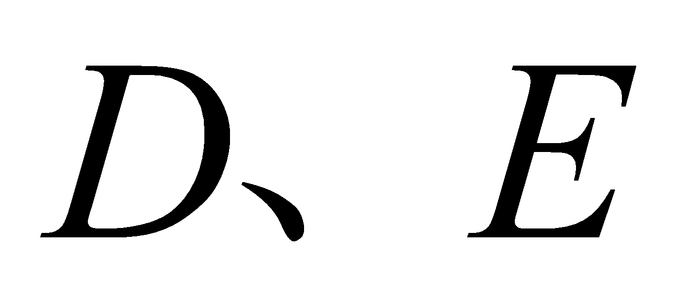
分别是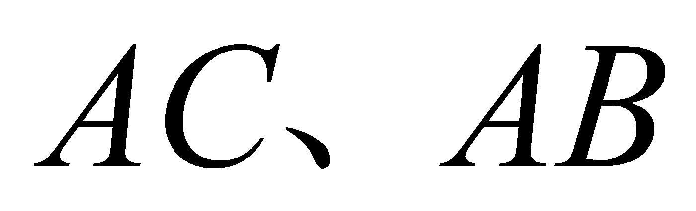
的中点．求：
(1)求 的长度；
的长度；
(2)若 在直线上，且，求的长度．
在直线上，且，求的长度．
【变式1】（24-25七年级上·江苏徐州·期末）如图，点C是线段上一点，点M是线段的中点，点N是线段的中点
(1)如果，求的长
(2)如果，求的长
【变式2】（24-25七年级上·江苏·期末）如图，点C为线段 上一点，点B为
上一点，点B为 的中点，且
的中点，且 ．
．
(1)图中共有 条线段；
(2)求的长；
(3)若点E在直线上，且
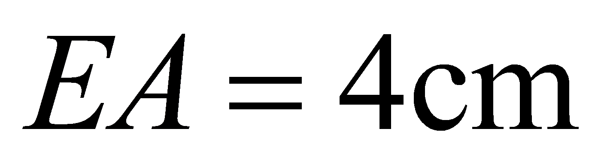
，求 的长．
的长．【变式3】（24-25七年级上·湖南衡阳·期末）（1）如图1，点C为线段上一点，与 长度之比为3:5，D为线段中点．
长度之比为3:5，D为线段中点．
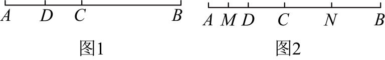
①若，求的长．
②点E为线段的中点，若
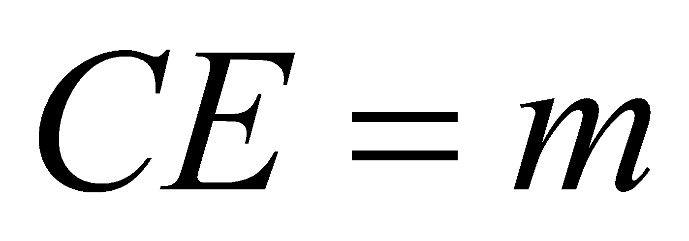
，求的长（用含m的代数式表示）．（2）如图2，点M为线段中点，点N为线段中点，若，
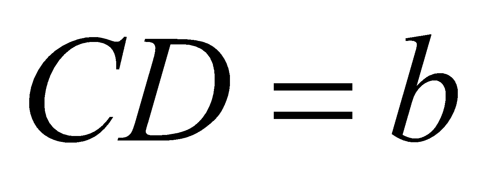
，请用含a，b的代数式直接表示出的长．题型06 线段n等分点的有关计算
【典例6】二等分点：又叫线段的 ，把线段分成 的两部分．
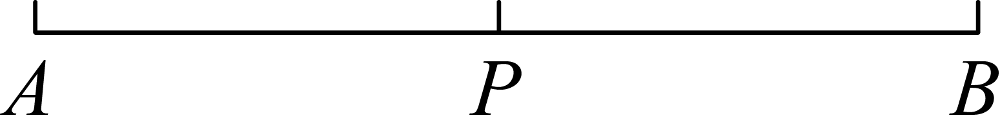
即：如图，若点P是线段 的中点，则
的中点，则 或
或
三等分点：把线段分成 的三部分．以此类推．
【变式1】已知线段 ，延长
，延长 至点C，使
至点C，使 ，点D、E均为线段延长线上两点，且
，点D、E均为线段延长线上两点，且 ，M、N分别是线段
，M、N分别是线段 的中点，当点C是线段
的中点，当点C是线段 的三等分点时，
的三等分点时， 的长为 ．
的长为 ．
【变式2】如图， 为线段
为线段 上一点，点
上一点，点 为
为 的中点，已知
的中点，已知 ．
．

(1)求 的长；
的长；
(2)若点 是线段
是线段 上靠近点A的三等分点，求
上靠近点A的三等分点，求 的长．
的长．
【变式3】已知线段 ，C是线段上任意一点（不与点A，B重合）．
，C是线段上任意一点（不与点A，B重合）．
(1)若M，N分别是 的中点，求的长度；
的中点，求的长度；
(2)若 ，
， ，求的长；
，求的长；
(3)在（2）的条件下，若 且G点在直线上，
且G点在直线上， ，求
，求 的长度．
的长度．
题型07 与线段有关的动点问题
【典例7】（24-25七年级上·山东青岛·阶段练习）已知线段，点C为线段上的一个动点（点C不与A、B重合），点D、E分别是和的中点
(1)若，求的长；
(2)若点C恰好是的中点，且，求的长．
【变式1】（24-25七年级下·北京·期末）已知点C为线段上一动点，点D，E分别是线段和的中点．
(1)如图，若线段 ，求线段的长；
(2)若线段的长为，则线段的长为 （用含的代数式表示）．
【变式2】（2024七年级上·全国·专题练习）如图，已知线段 ，点M从点A出发以
，点M从点A出发以
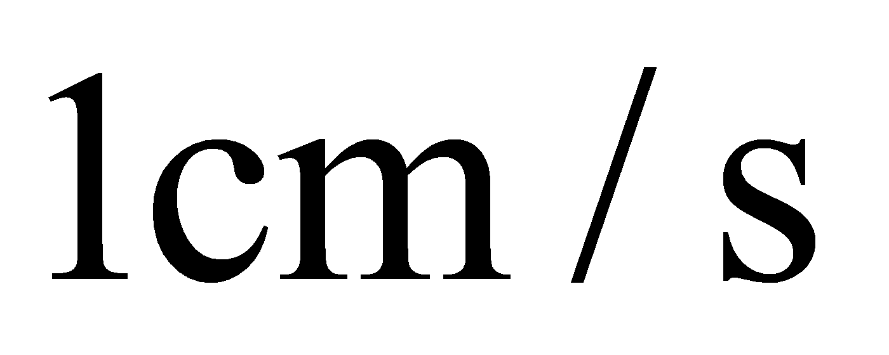
的速度沿 的方向运动，同时点N从点B出发以
的方向运动，同时点N从点B出发以 的速度沿
的速度沿 的方向运动，其中一个点到达端点时，另一个点也同时停止，设运动时间为
的方向运动，其中一个点到达端点时，另一个点也同时停止，设运动时间为 ．
．
根据题意回答下列问题：
(1)当
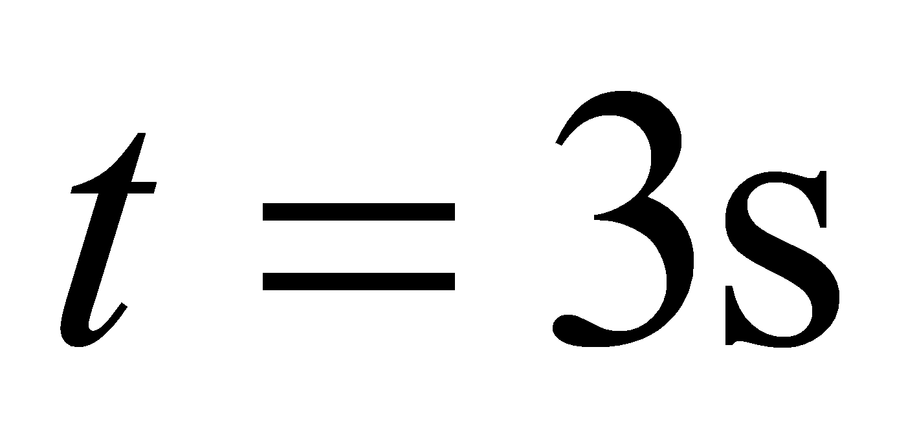
时， ______；当
______；当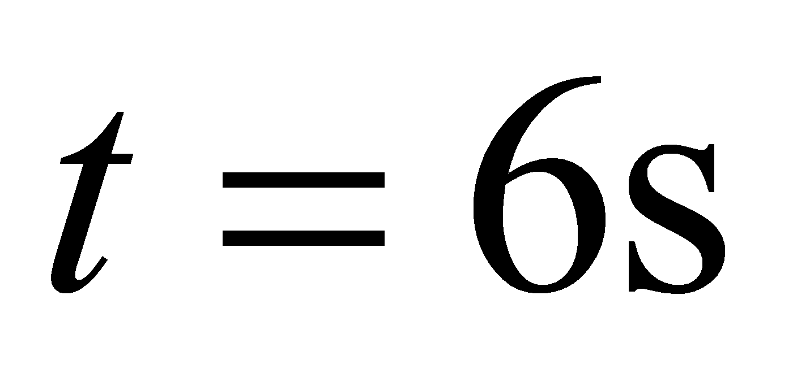
时，______．(2)若C为线段上一点，当点M与N相遇时，设相遇的位置为点．
①若 ，求线段的长；
，求线段的长；
②若 ，求线段的长．
，求线段的长．
【变式3】（24-25七年级上·陕西咸阳·期末）如图，已知数轴上点表示的数为，点表示的数为，满足 ．动点
．动点 从点出发以每秒4个单位长度的速度沿数轴向左匀速运动，设运动时间为
从点出发以每秒4个单位长度的速度沿数轴向左匀速运动，设运动时间为 秒．
秒．

(1)数轴上点表示的数是_______，点表示的数是_______；
(2)若点从点出发向左运动，点 为
为 的中点，在点到达点之前，求证：
的中点，在点到达点之前，求证： 为定值．
为定值．
【变式4】（24-25七年级上·河南郑州·阶段练习）如图①，已知点C在线段 上，线段
上，线段 厘米，
厘米， 厘米，点M，N分别是
厘米，点M，N分别是 ，
， 的中点．
的中点．

(1)求线段 的长度；
的长度；
(2)根据第（1）题的计算过程和结果，设 ，其他条件不变，求的长度；
，其他条件不变，求的长度；
(3)动点P、Q分别从A、B同时出发，点P以2厘米/秒的速度沿向右运动，终点为B，点Q以1厘米/秒的速度沿 向左运动，终点为A，当一个点到达终点，另一个点也随之停止运动，求运动多少秒时：
向左运动，终点为A，当一个点到达终点，另一个点也随之停止运动，求运动多少秒时：
①点P恰好为线段 的中点？
的中点？
②直接写出C、P、Q三点中有一点恰好是以另两点为端点的线段的中点？（除①外）

一、单选题
1．（24-25七年级上·广东东莞·期末）亮亮准备从学校出发，开车去南山滑雪场滑雪，他打开导航，显示两地直线距离为 ，但导航提供的三条可选路线长却分别为
，但导航提供的三条可选路线长却分别为
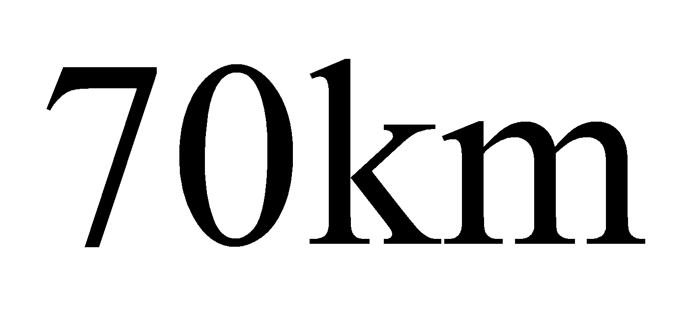
，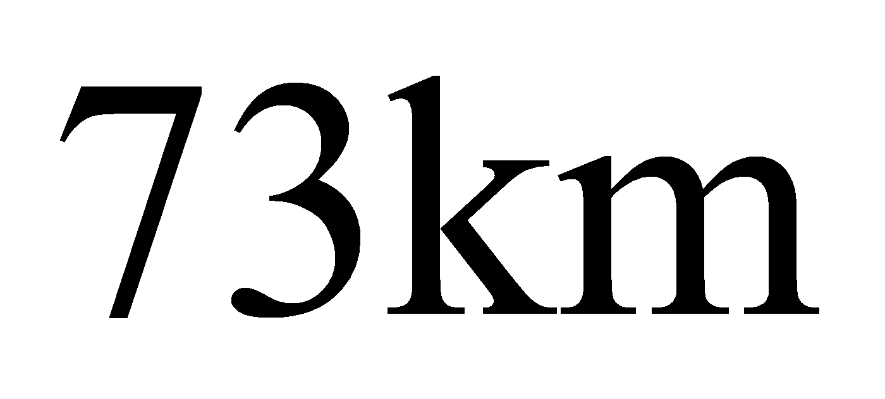
，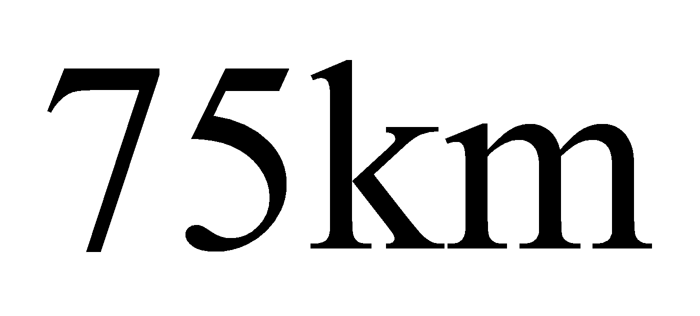
．能解释这一现象的数学知识是（ ）A．两点确定一条直线 B．两点之间，线段最短
C．两点之间，直线最短 D．经过一点有无数条直线
2．（21-22七年级上·甘肃武威·期末）如图，小莹利用圆规在线段 上截取线段
上截取线段 ，使
，使
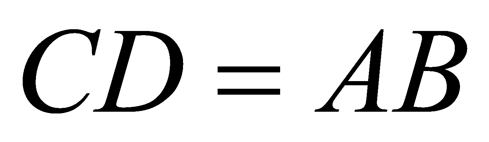
．若点D恰好为的中点，则下列结论中正确的是（ ）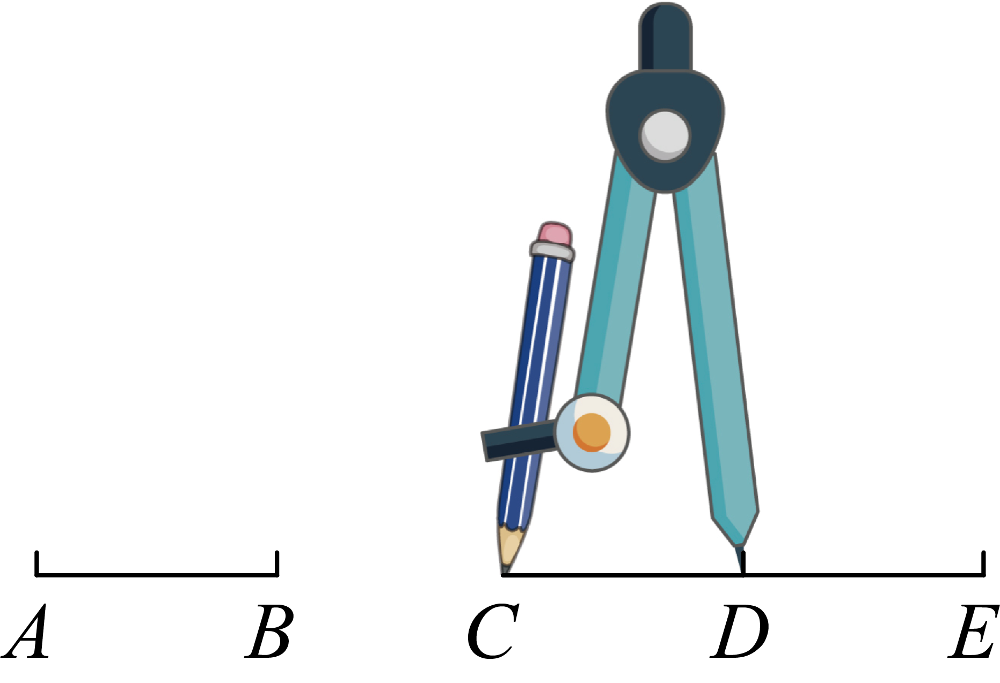
A．
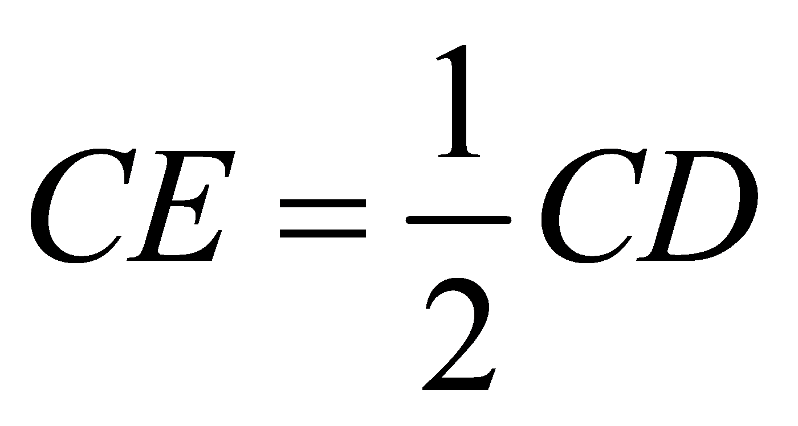
B． C． D．
D．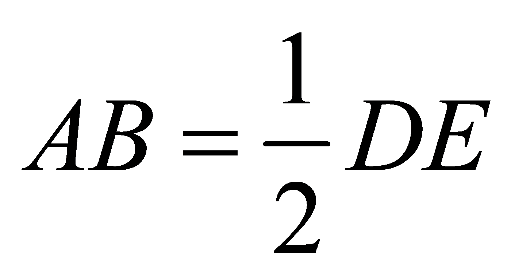
3．（25-26七年级上·全国·课后作业）下列说法不正确的是（ ）
A．若点C在线段 上，则
上，则
B．若，则点C一定在线段外
C．若 三点不在一直线上，则
三点不在一直线上，则
D．若点C在线段 的延长线上，则
的延长线上，则
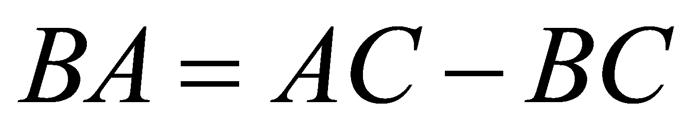
4．（24-25七年级上·广东东莞·期末）已知A、B、C三点在同一条直线上，如果线段
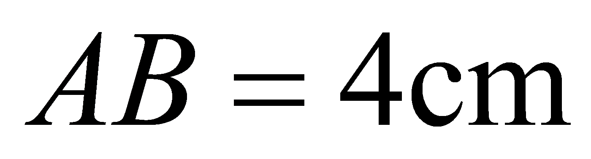
， ，那么A、C两点间的距离为（ ）
，那么A、C两点间的距离为（ ）A． B．
B． C．或 D．不能确定
C．或 D．不能确定
5．（23-24七年级上·山东临沂·期末）如图，已知A，B（B在A的左侧）是数轴上的两点，点A对应的数为12，且 ，动点P从点A出发，以每秒2个单位长度的速度沿数轴向左运动，在点P的运动过程中，M，N始终为
，动点P从点A出发，以每秒2个单位长度的速度沿数轴向左运动，在点P的运动过程中，M，N始终为 ，
， 的中点，设运动时间为t（
的中点，设运动时间为t（ ）秒，则下列结论中正确结论的个数是（ ）
）秒，则下列结论中正确结论的个数是（ ）
①B对应的数是 ；
；
②点P到达点B时， ；
；
③
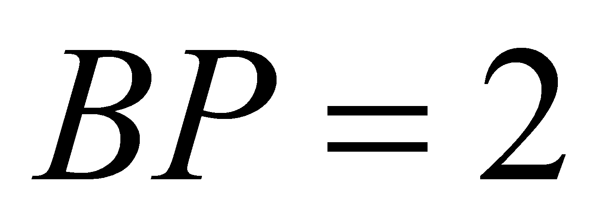
时， ；
；④在点P的运动过程中，线段 的长度会发生变化．
的长度会发生变化．

A．①② B．①②③ C．①③④ D．①②③④
二、填空题
6．（25-26八年级上·黑龙江佳木斯·阶段练习）如图，已知线段上有两点C、D，且
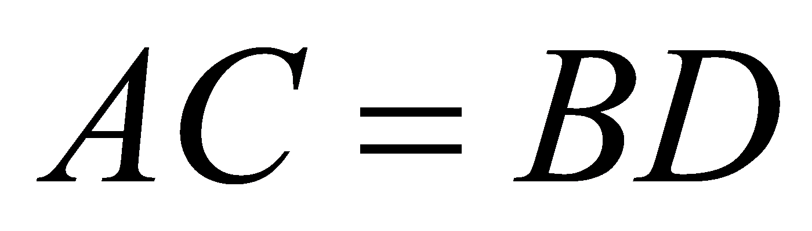
，M、N分别是线段 的中点，若，则线段的长为 ．
的中点，若，则线段的长为 ．
7．（24-25七年级上·河南郑州·期中）小明从衡阳乘高铁到成都，发现这条火车路线上共有10个站(衡阳东，长沙南，武汉，汉口，宜昌东，荆州，恩施，丰都，重庆北站，成都东)，且任意两站之间的票价都不相同，则有 不同的票价，要准备 不同的车票．
8．（24-25七年级上·甘肃兰州·期末）如图，点 、
、 分别是线段
分别是线段 上两点(
上两点(
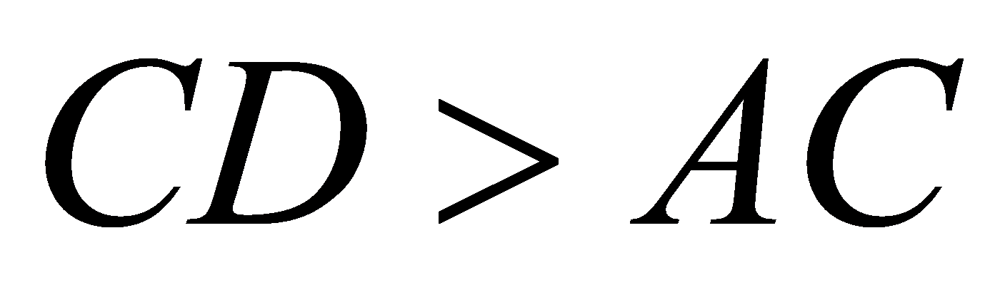
， )，用圆规在线段
)，用圆规在线段 上截取
上截取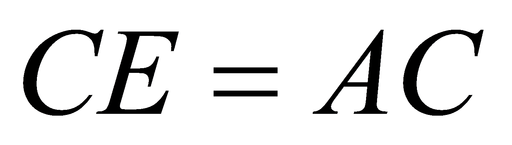
， ，若点
，若点 与点
与点 恰好重合，
恰好重合， ，则
，则 ．
． 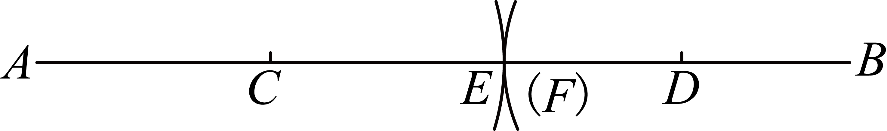
9．（24-25七年级上·山东枣庄·期末）线段 ，点C为线段上的三等分点，当点D为线段
，点C为线段上的三等分点，当点D为线段 的中点，则线段
的中点，则线段 的长为 ．
的长为 ．
10．（23-24七年级上·江西上饶·期中）数轴上的三个点，若其中一个点与其它两个点的距离相等，则称该点是其它两个点的“中点”，这三点满足“中点关系”．已知，如图点 ，
， 表示的数分别为
表示的数分别为 ，
， ，点为数轴上一动点．若，，三点满足“中点关系”时，则点表示的数为 ．
，点为数轴上一动点．若，，三点满足“中点关系”时，则点表示的数为 ．
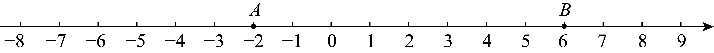
三、解答题
11．（24-25七年级上·福建福州·期末）如图，
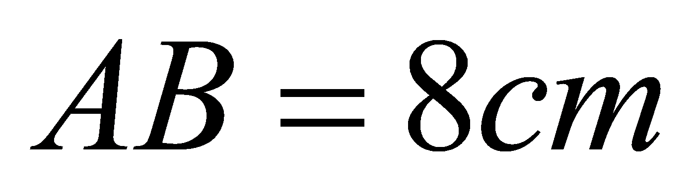
，点C是线段的中点，点D是线段 上一点，
上一点，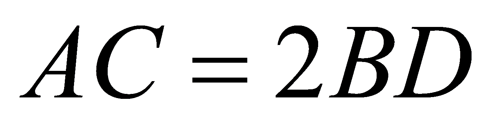
，求 的长．
的长．
12．（24-25七年级上·全国·期末）如图，B、C、D依次为线段AE上的三个点．已知
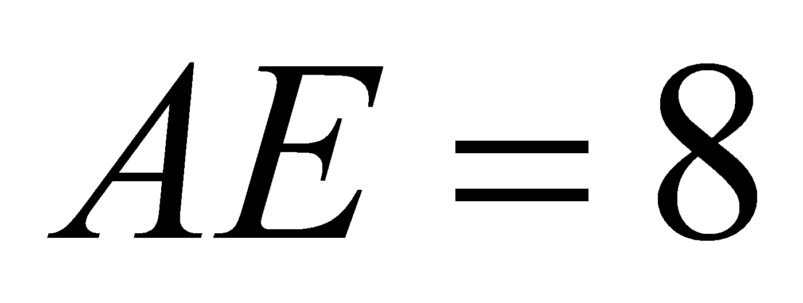
，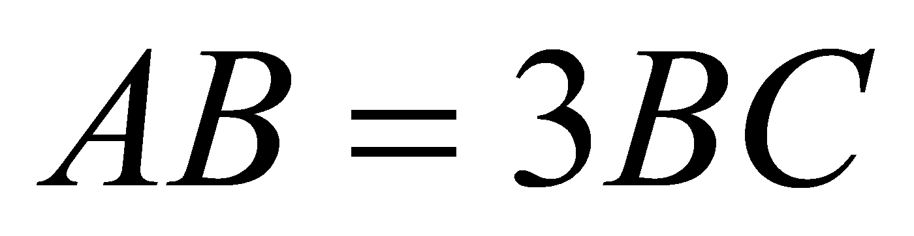
，．(1)求 的长；
的长；
(2)求图中所有线段长度的和．
13．（24-25七年级上·湖北武汉·期末）如图，已知平面上四个点A，B，C，D，请按要求完成下列问题：

(1)画直线，射线，连接 ；
；
(2)在线段上求作点P，使得 ；（保留作图痕迹）
；（保留作图痕迹）
(3)在线段上求作点E，使得点E到A、D、B、P的距离之和最小，这样做的理由是_______________________________________________．
14．（24-25七年级上·全国·期末）如图，点C是线段的中点．
(1)请按下列要求画出图形（尺规作图，保留作图痕迹，不用写作法）．延长线段至点D，使，延长 至点E，使
至点E，使 ．并求 的值；
．并求 的值；
(2)若 ，求
，求 的长．
的长．
15．（24-25七年级上·全国·期末）如图所示，点C在线段上，，，点 分别是
分别是 的中点．
的中点．
(1)求 的长度；
的长度；
(2)求的长度；
(3)若点P在直线上，且，点 为
为 的中点，求
的中点，求 的长度．
的长度．
16．（2024七年级下·广东梅州·竞赛）如图，数轴上点A表示的数为a，点B表示的数为b，C是的中点，且a、b满足．
(1)求点C表示的数；
(2)若点P从A点出发向右运动，点M为的中点，在点P到达点B之前，求证 为定值；
为定值；
17．（24-25七年级上·辽宁沈阳·期中）如图，在数轴上点A表示 ，点B表示b，点C表示c，并且是多项式
，点B表示b，点C表示c，并且是多项式 的二次项系数，b是数轴上最小的正整数，单项式的次数为c．
的二次项系数，b是数轴上最小的正整数，单项式的次数为c．
(1)由题意可得： ______，
______， ______，
______， ______．
______．
(2)点A、B、C在数轴上运动，若点A以每秒1个单位长度的速度沿数轴向左运动，点B和点C分别以每秒2个单位长度和4个单位长度的速度沿数轴向右运动，设点A、B、C同时运动，运动时间为t秒．
①当 时，分别求的长度．
时，分别求的长度．
②在点A、B、C同时运动的过程中，的值是否随着时间t的变化而变化？若变化，说明理由；若不变，求出的值．
18．（24-25七年级上·浙江嘉兴·阶段练习）如图，点P是线段上一点，且满足，点C，D分别在线段，上．

(1)若 ，探究线段，
，探究线段， 的数量关系；
的数量关系；
(2)若点Q是直线上一动点，且，求的值；
(3)若E是线段上的一个动点，点M，N分别是， 的中点，以下两个结论：
的中点，以下两个结论：
① 的值不变，②
的值不变，② 的值不变，其中只有一个结论是正确的，请你找出正确的结论并求值．
的值不变，其中只有一个结论是正确的，请你找出正确的结论并求值．